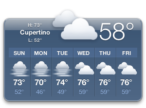
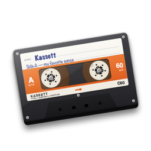

Planchette BETA 0.4
Planchette is a Markdown editor for blogs that run on Ghost. I write on the left, and the preview on the right scrolls along with me.
More about Planchette ›I'm writing small Mac apps so my mom's 2010 MacBook Air can do everyday things again, like posting to my blog, playing Spotify around the house and staying on our Wi-Fi. They run on Lion and use the same secure connections modern browsers do. I also want them to feel like they came out in 2011, so every window is drawn in Lion's style. 🦁
The apps need Mac OS X Lion 10.7.5 on an Intel Mac. The first public beta is ready to download.




Every app here is a regular Cocoa app with proper menus, keyboard shortcuts and Keychain support.
Planchette is a Markdown editor for blogs that run on Ghost. I write on the left, and the preview on the right scrolls along with me.
More about Planchette ›
Kassett is a remote for Spotify. It shows what's playing as a cassette turning in a tape deck, and its library looks like iTunes 10.
More about Kassett ›Latchkey keeps Lion on Wi-Fi networks that offer WPA2 and WPA3 together, which Lion otherwise refuses to join.
More about Latchkey ›Forecast is a weather widget for Lion's Dashboard, drawn to sit next to Apple's own widgets.
More about Forecast ›These are the next apps on my list.
Setting things up takes about five minutes.
Safari on Lion only supports TLS 1.0, and almost every website needs something newer, including this one. Momiji is a Firefox-based browser that still supports Lion, so install it first.
Each app comes as a single download that already contains the networking code it needs. Drag it into your Applications folder.
The apps aren't signed by Apple, so Gatekeeper stops them the first time you open them. Control-click the app, choose Open, and then click Open again. After that it opens normally.
These are beta versions. Each app tells you when a newer one is out, and you can also choose Check for Updates from its app menu.
Kassett works with Spotify Premium. Spotify only lets 25 hand-picked accounts sign in through my copy of Kassett, so you may need to create your own free Spotify app and give Kassett its Client ID.
Download KassettYou can also get the zip file or read the release notes.
Planchette works with blogs that run on Ghost. You'll need an Admin API key, which you can create in Ghost Admin under Settings, then Integrations.
Download PlanchetteYou can also get the zip file or read the release notes.
Lion comes with Python 2.7 and PyObjC, which is enough to build full Cocoa apps without Xcode. What it can't do is talk to most of today's web, because its networking stops at TLS 1.0. LionKit fixes that by bundling curl 8 and OpenSSL 3 from MacPorts' builds for Lion, and each package is checked against MacPorts' signing key before it's installed.
Passwords and API keys go into your login keychain and never into plain files. I test every screen on the same Late 2010 MacBook Air with 2 GB of RAM that started this project.
It started with my mom's 2010 MacBook Air. Apple supports it up to High Sierra, but I went back to Lion because I like it more, especially the animations. After that I started fixing the things the modern internet broke, one at a time.